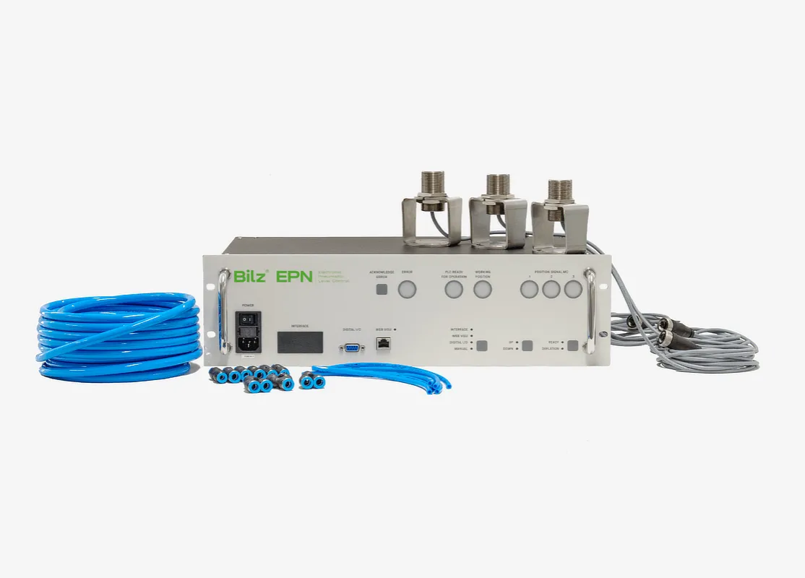
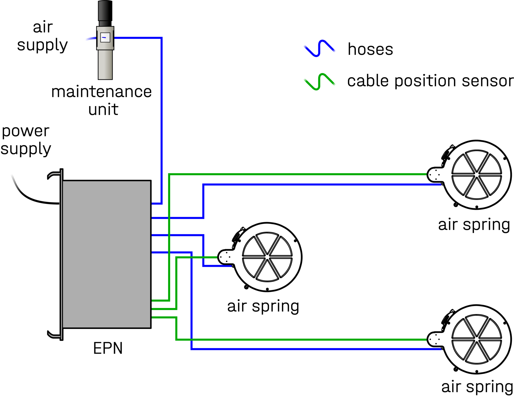
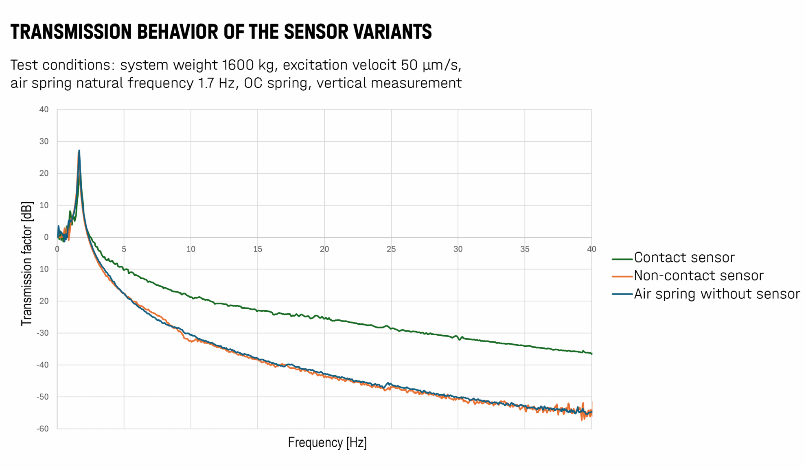
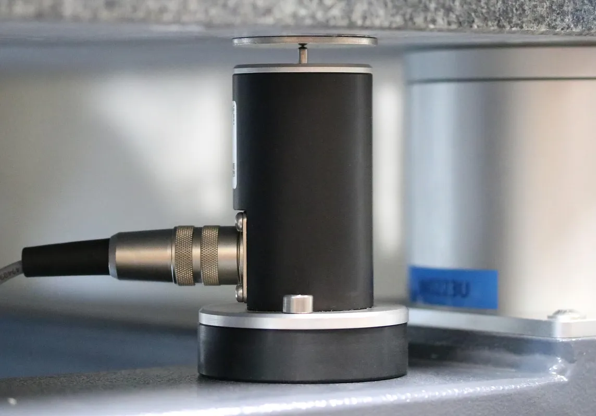
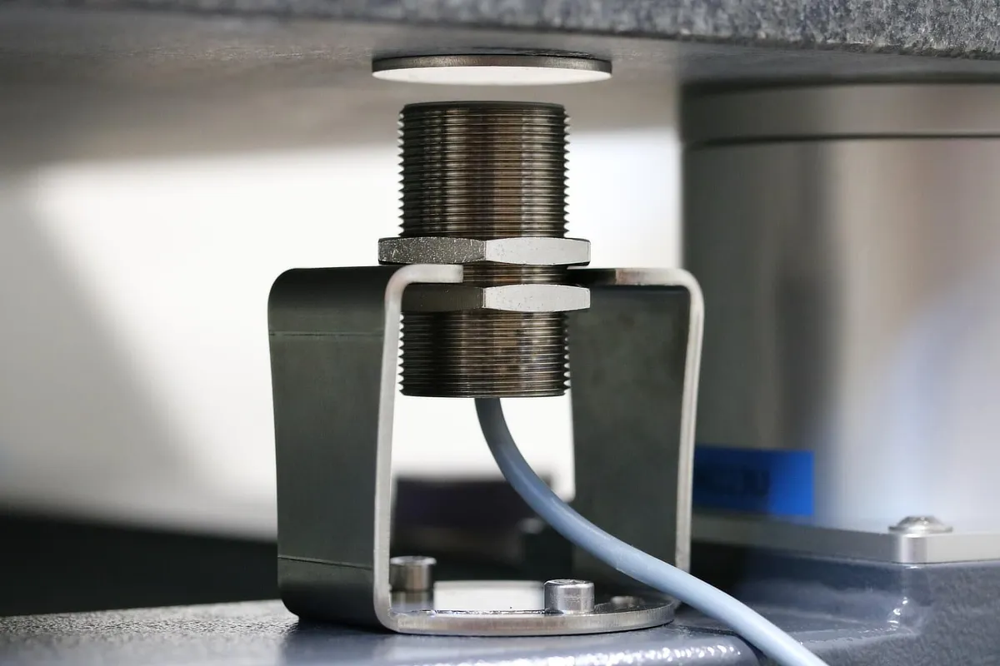

Zintegrowana elektroniczna regulacja poziomu pneumatycznego — zawory proporcjonalne, dokładność < ±0,01 mm.
EPN (Electronic Pneumatic Level Control) to elektroniczny system regulacji poziomu pneumatycznego do dynamicznych i wrażliwych na drgania maszyn pomiarowych, testujących i produkcyjnych. Dzięki inteligentnemu algorytmowi sterowania i zaworom elektronicznym o przepływie do 250 l/min ugięcia i czasy osiadania są znacznie mniejsze niż w mechaniczno-pneumatycznych regulacjach poziomu.
EPN zaprojektowano jako zintegrowany, centralny sterownik wraz z zaworami proporcjonalnymi, co minimalizuje miejsce i pracę montażową po stronie maszyny — podłącza się jedynie przewody do miechów powietrznych oraz kable czujników położenia. System obsługuje trzy niezależnie monitorowane i sterowane obwody regulacji (regulator PID) i jest dostępny z czujnikami stykowymi lub bezkontaktowymi (bezzużyciowymi).

EPN to zintegrowany, centralny sterownik wraz z zaworami proporcjonalnymi. Po stronie maszyny podłącza się jedynie przewody do miechów powietrznych oraz kable czujników położenia, co minimalizuje miejsce i pracę montażową. Każda jednostka steruje trzema stopniami swobody.

| Dokładność powrotu (powtarzalność) | < ±0,01 mm |
|---|---|
| Obwody regulacji | 3 (niezależnie monitorowane i sterowane, regulator PID) |
| Pomiar wysokości | przetwarzanie 16-bitowe na obwód |
| Zawory | proporcjonalne grzybkowe, przepływ do 250 l/min |
| Czujniki stykowe | zakres pomiarowy 12 mm / 24 mm |
| Czujniki bezkontaktowe | zakres pomiarowy 13 mm, bezzużyciowe, regulacja wstępna wysokości gwintem |
| Tłumienie pasywne | 15% (z miecha powietrznego) |
| Współpraca | miechy membranowe BiAir; miechy gumowe FAEBI (z dodatkowym filtrem) |
| Interfejs | przeglądarkowy (WebVisu) do regulacji i diagnostyki, zdalne utrzymanie |
Zintegrowana konstrukcja sterownika z zaworami proporcjonalnymi upraszcza montaż po stronie maszyny. Wymienne warianty czujników (stykowe lub bezkontaktowe) pozwalają dopasować rozwiązanie do wymagań dokładności i trwałości. Pomożemy dobrać konfigurację do Twojej maszyny.

EPN dostępny jest z dwoma rodzajami czujników pomiaru wysokości — dobieranymi pod wymagania dokładności i trwałości.

Pomiar wysokości elementem w kontakcie z powierzchnią. Zakres pomiarowy 12 mm lub 24 mm, dokładność powrotu < ±0,01 mm lub < ±0,02 mm. Prosty i sprawdzony, z czasem podlega zużyciu mechanicznemu.

Bezzużyciowy pomiar bez kontaktu z maszyną. Zakres pomiarowy 13 mm, dokładność powrotu < ±0,01 mm, wstępna regulacja wysokości gwintem. Lepiej zachowuje pierwotną charakterystykę miecha.
| Cecha | Czujnik stykowy | Czujnik bezkontaktowy |
|---|---|---|
| Kontakt z maszyną | tak | nie |
| Zużycie | tak | nie (bezzużyciowy) |
| Regulacja wysokości | nie | tak (gwint) |
| Zakres pomiarowy | 12 mm / 24 mm | 13 mm |
| Dokładność powrotu | < ±0,01 mm / < ±0,02 mm | < ±0,01 mm |
Dynamiczne i wrażliwe na drgania maszyny pomiarowe, testujące i produkcyjne wymagające wysokiej dokładności poziomowania.
Stanowiska testowe silników — skuteczność izolacji ponad 75% (realizacja AVL).
Współrzędnościowe maszyny pomiarowe o powtarzalnej dokładności poniżej 1 µm (realizacja Hexagon).
Izolacja fundamentów szlifierek do uzębień oraz wibroizolowane platformy do posadowienia maszyn w ciasnych przestrzeniach.
Film Bilz prezentujący elektroniczną, pneumatyczną regulację poziomu maszyn.
Dobierzemy system EPN i rodzaj czujników do Twojego systemu wibroizolacji pneumatycznej.
EPN to elektroniczny system poziomowania do antywibracyjnego posadowienia maszyn na pneumatycznych miechach BiAir (oraz gumowych FAEBI z dodatkowym filtrem). Zintegrowany sterownik z zaworami proporcjonalnymi o przepływie do 250 l/min utrzymuje poziom z dokładnością powrotu poniżej ±0,01 mm w trzech niezależnych obwodach regulacji PID. Dostępne czujniki stykowe lub bezkontaktowe, a przeglądarkowy interfejs (WebVisu) umożliwia regulację, diagnostykę i zdalne utrzymanie. Oficjalnym przedstawicielem Bilz w Polsce jest firma EKKON z Olsztyna.